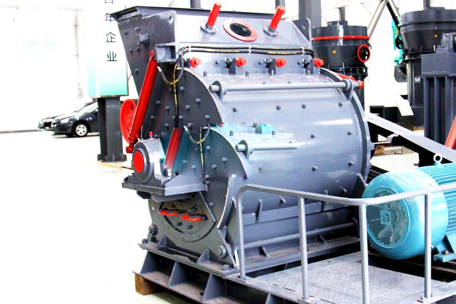

Construction waste crushing production line

Mobile construction waste crushing station for urban construction waste crushing.
hammer mill for sale
hammer mill for sale. PC Series European version efficient mill type crusher, hammer mill prices, the European version efficient crushing-type milling machine is developed and manufactured for the production of a new generation of 0-3MM meal mill, the production of meal core equipment particles.
India hammer mill price. Hammer mill is widely used in mining, cement, metallurgic, and Petroleum & Chemical industries. It is used for grinding the medium-hard materials and its pressure resistance strength is blow 100Mpa, and humidity lower than 18%. It features the simple structure, large reduction ratio, and high-efficiency, with both dry and wet process are available. The hammer mill is one of the main equipment for intermediate and fine crushing the brittle materials with less than intermediate such as limestone coal and other used in metallurgy, building material, chemical and water – power industry, with a feature of big crushing ratio and even product graininess. Hammer mill for sale by the collisions between high-speed hammer and material, and the hammer crusher (hammer mill) has the features of simple structure, high reduction ratio, high efficiency, etc. It combines the traditional second crushing and compared with the jaw crusher and impact crusher it has advantages of high energy-saving, area-saving and low investment for once.

India hammer mill for sale. Hammer Mill Control The hammer mill machine controller controls the entire grinding process. In addition to the main functions such as starting and stopping all motors, it also monitors all the necessary safety functions. The mill throughput is automatically controlled on the basis of the motor loading during grinding in conjunction. An optimized starting program enables the mill to reach the required nominal loading within a short time. Interfaces for operation, display, and process control are provided. As a variant, the controller is also available as a pure throughput control device, without any other control functions. Hammer Mills For Sale in South Africa CAG is a hammer mill supplier and manufacturer. The grinding chamber designed by our comapny is very easy to access and allows fast checking and cleaning. High Operating Reliability The new hammer vertical mill complies with all the current safety standards. All hazardous operations are provided with multiple protections. All safety functions are hardwired in the control cabinet of the vertical hammer mill grinder. The optimized grinding action reduces the noise of the machine to a low level of max. 83dB. The load-governed throughput controller allows the required motor loading to be selected.
India hammer mill supplier. Mill, ultrafine mill, jaw crusher, hammer crusher, CAG professional production mills and crushers and related equipment, independent research and development of ultra-fine milling machine, micro-grinding, the new Raymond machines. Crusher mainly jaw crusher, hammer mill.
Leave Me A Message, Now
If you have any questions regarding equipment prices, production line configuration or other problems, you can send a message to us, we will contact you soon.